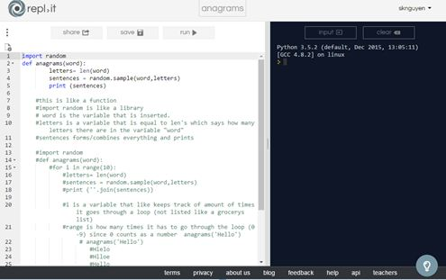
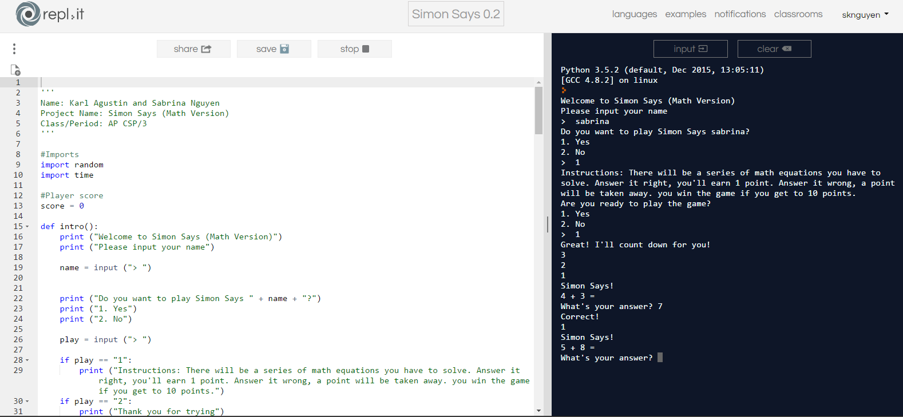
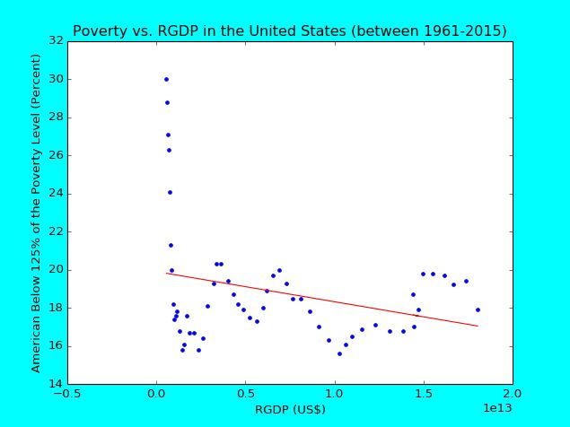

This is our scratch project is based off the story of little red riding hood. We got the wolf to chase the sheep, for it had plans to eat it. We also inserted noise.
This is the anagram project where we had to insert a random word and have it print. For example, I can enter "Christmas" and it would print back. The print would be out of order. https://repl.it/Djhg/5
This is the simon says math project where you answer a bunch of math questions. The simon says prints out random math problems deciding on the level chosen.
This is our data project. Our topic is "Has the international level increase of GDP reduced the amount of poverty throughout the world?" We found data, made a visuilization (scatterplot), and made a design brief.